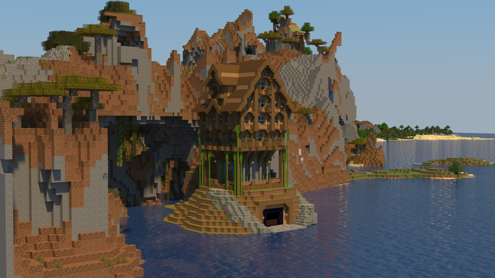
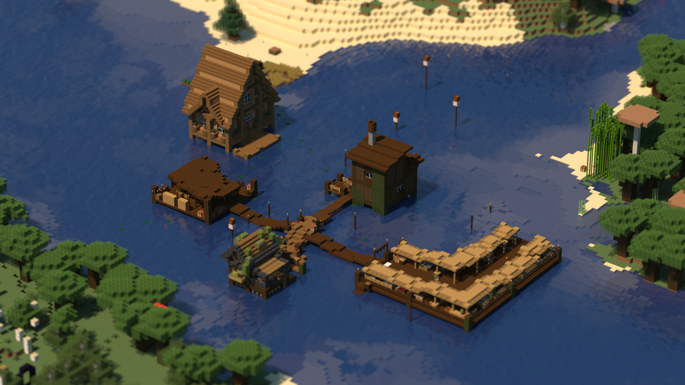
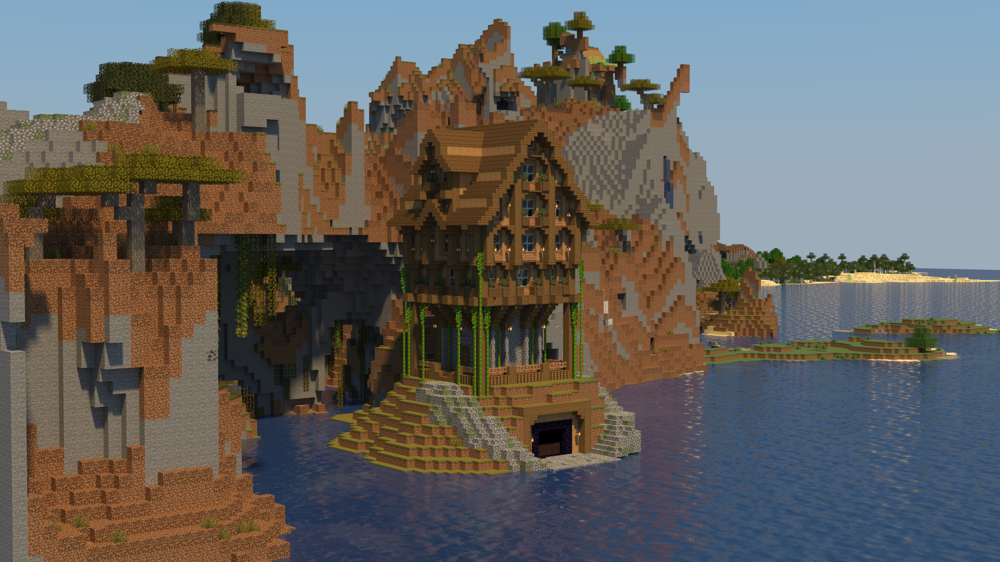
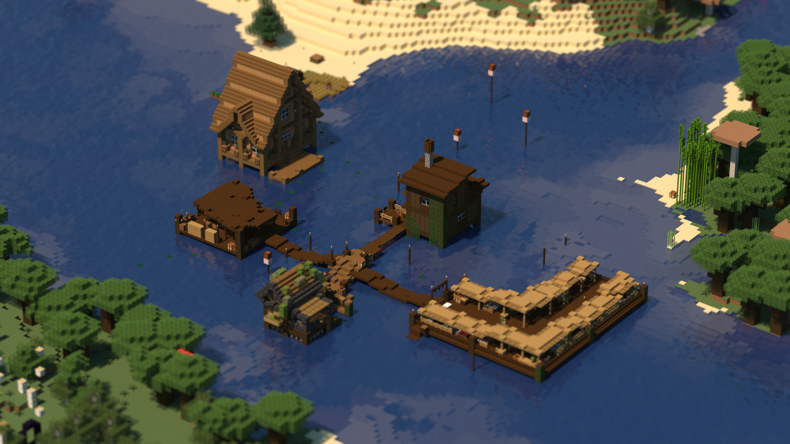
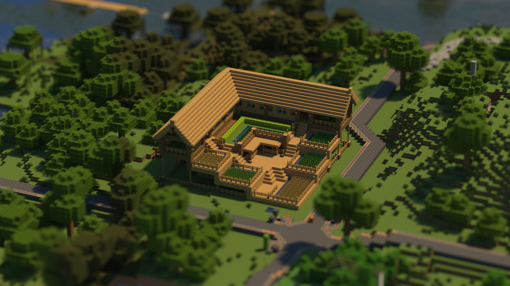
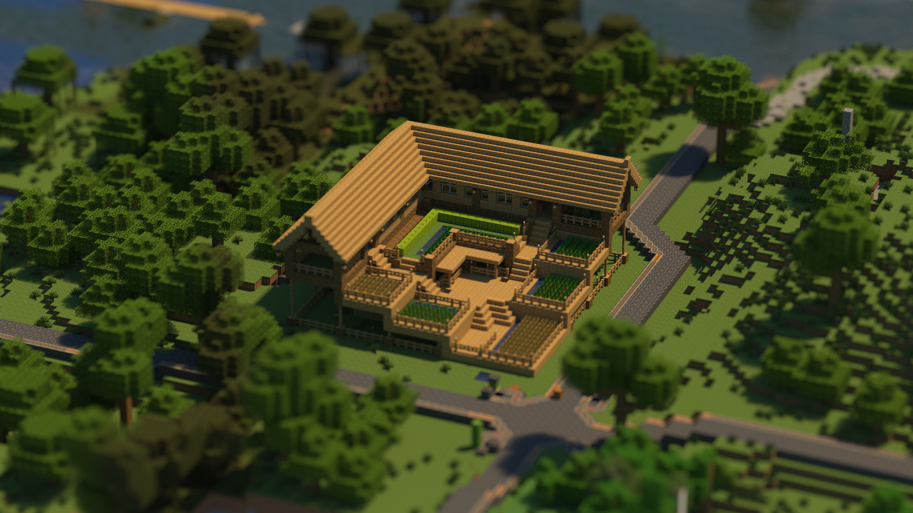

About Brookstock
The Brookstock Minecraft Server (BMS) was conceived in 2018 while its founding members were living together during their undergraduate education. It was out of a simple desire to play on a server with each other that BMS was born.
The server takes its name from the name of the house where the server was founded and subsequently hosted on a small server computer in the basement. Since that time, the server has undergone many infrastructure changes to bring it to where it is today.
This server is private. For more information, please contact me.
Relevant Links
Rules of Conduct
In this section I will outline some basic rules of conduct that I expect players to uphold. Because this server is really just intended to be a simple place where people can play together, rules will only exist insofar as they work to maintain this kind of space.
The rules listed here should be thought of as a guide for how one should act before making other arrangements with other players (e.g. you are not allowed to kill other players, but if two players agree to fight one another, this kind of activity would be allowed).
Without further discussion, then, here are the simple rules for the Brookstock Minecraft Server. If you have any questions or concerns, do not hesistate to contact me on Discord.
- Be respectful: Essential to the quality of the server is that everyone should feel safe and welcome. Do not prank (outside of reason), kill, harass, or otherwise bully other players.
- Do not grief: This is fairly self explanatory, but players on the server should not have to worry that their builds might be destroyed or their things pillaged.
- Do not cheat: While on the server we would like everyone to be playing the same game. Please do not duplicate items, use x-ray, or any other cheat to give yourself an advantage.
- Do not steal from other players: Taking items from other people's chests without their permission will not be tolerated, no matter how insignificant the item may seem.
Photo Gallery
 



 
